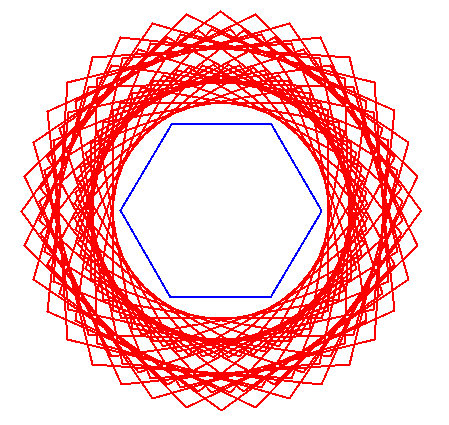
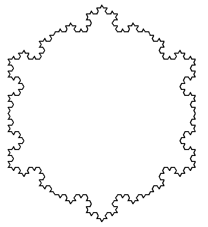
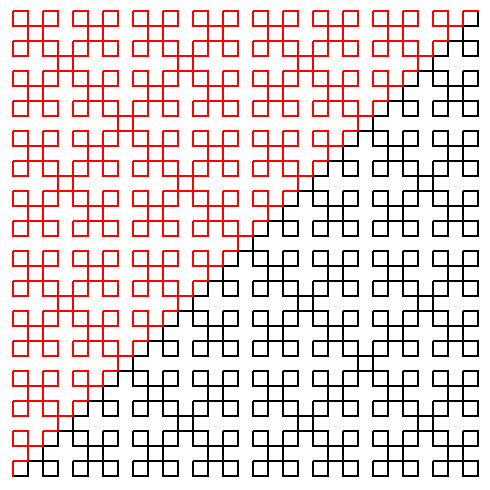

Parsing is implemented using the tools JFlex and CUP. JFlex is already installed in the lab rooms. CUP is contained in the tarball that is provided.
The basic structure is provided (a tarball with Java files and a Makefile) : mini-turtle-java.tar.gz. Once uncompressed (for instance with tar zxvf mini-turtle-java.tar.gz), you get a directory mini-turtle-java/. (If you use Eclipse, run it in the directory containing mini-turtle-java/ with eclipse -data . then create a project mini-turtle-java and disable option Use default location.) This project contains a package mini_turtle with the following files:
| Turtle.java(i) | the graphical turtle (complete) |
| Syntax.java | the abstract syntax of mini-Turtle (complete) |
| Lexer.flex | lexical analyzer (to be completed) |
| Parser.cup | syntax analyzer (to be completed) |
| Interp.java | the interpreter (complete) |
| Main.java | main class (complete) |
| Makefile | to automate the build (complete) |
The code compiles but is incomplete. Places to be filled are marked * TODO */. The command make recompiles everything (including calls to JFlex and CUP) and runs the program on a test file.
Note: The library java-cup-11a-runtime.jar, provided in lib/, is needed to run the code generated by CUP. VSCode and Eclipse should add lib/ to the class path automatically, but old versions of Eclipse may require you to do Java Build Path -> Libraries -> Add JARs.
The program takes a file to be interpreted on the command line, with suffix .logo. When it is not provided, it defaults to test.logo.
if else def repeat penup pendown forward turnleft
turnright color black white red green blue
An identifier ident contains letters, digits, and underscores
and starts with a letter. An integer literal
integer is a sequence of digits.
file ::= def* stmt* def ::= def ident ( ident*Priorities of arithmetic operations are usual, and unary negation has the strongest priority., ) stmt stmt ::= penup | pendown | forward expr | turnleft expr | turnright expr | color color | ident ( expr*, ) | if expr stmt | if expr stmt else stmt | repeat expr stmt | { stmt* } expr ::= integer | ident | expr + expr | expr - expr | expr * expr | expr / expr | - expr | ( expr ) color ::= black | white | red | green | blue
Note: you can edit/compile/run code from a Java IDE (VSCode, Eclipse, etc.) and even use it to edit files Lexer.flex and Parser.cup. But you have to rerun jflex and cup (with make in a terminal).
forward 100should be accepted and a window should open with an horizontal line (100 pixels long). Check the priorities of arithmetic operations, for instance with
forward 100 + 1 * 0If the priorities are wrong, you will get a point instead of a line.
Test with programs such as
forward 100 turnleft 90 color red forward 100
Test with programs such as
repeat 4 {
forward 100
turnleft 90
}
You can test using the files provided in subdirectory tests, namely :
The command make tests runs the program on each of these files. You should get the following images (pressing a key in between):|  |  |  |